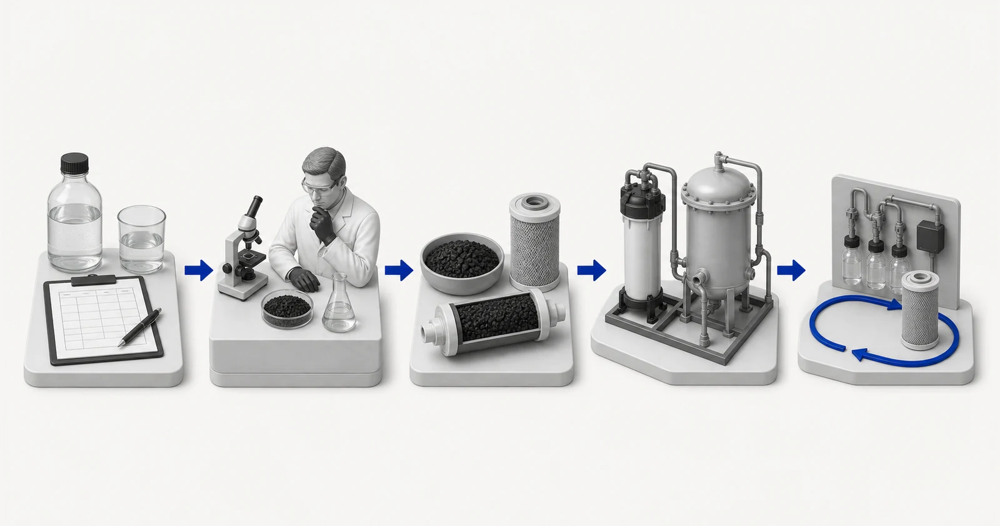

Activated Carbon Technical Review
Do not preselect a carbon product. Provide the treatment problem, current report, hydraulic duty and equipment context. Yuchen Water will identify the material direction, missing evidence and related equipment questions.

- Water or process-fluid report
- Technical risk and evidence review
- Activated-carbon material direction
- Equipment and monitoring match
- Operation and replacement support
Conceptual illustration. Not test results, product certification or an engineering drawing.
What to send
Send the water or process-fluid report, target compounds, flow and operating conditions for an activated-carbon material and equipment-support review.
Without a representative report and defined target, only preliminary guidance is possible. Final materials, equipment and service planning require reviewed evidence.
Frequently asked questions
Can I submit an incomplete report?
Yes. Mark missing values clearly. The response will remain preliminary and can recommend the additional analysis needed.
Will Yuchen Water choose a product from TDS only?
No. TDS does not define adsorption duty. Target compounds, organics, oxidants, particles, flow and equipment conditions may be required.
Can equipment support be included?
Yes. Yuchen Water can discuss relevant cartridges, housings, vessels, pretreatment and technical support after the duty is understood.